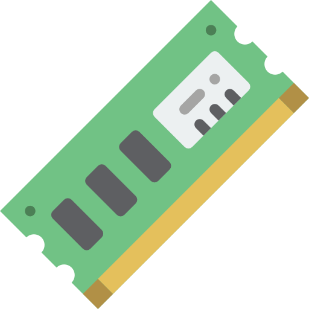

Memória RAM
A Memória RAM (Random Access Memory) é um tipo de memória volátil utilizada em computadores e dispositivos eletrônicos para armazenar temporariamente dados e instruções que estão sendo processados pelo sistema. Ela permite acesso rápido aos dados, o que é essencial para o desempenho do sistema, especialmente em tarefas que exigem processamento intensivo, como jogos, edição de vídeo e execução de múltiplos aplicativos simultaneamente. Quanto maior a capacidade de RAM, mais dados podem ser armazenados temporariamente, resultando em melhor desempenho geral do sistema.